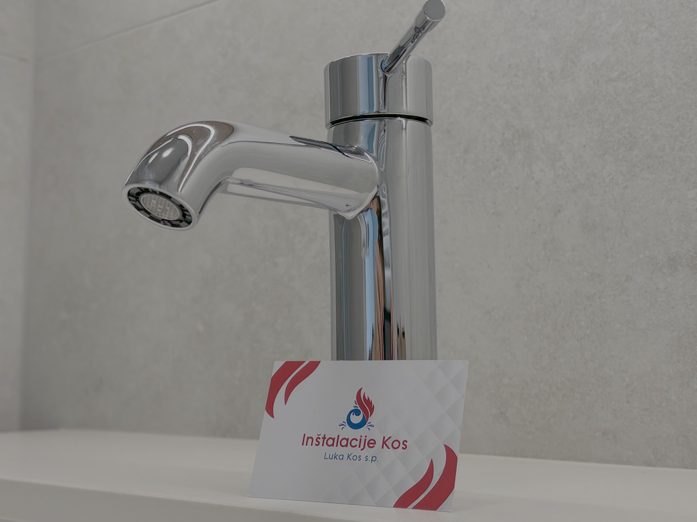

Storitve
Kaj lahko uredim za vas.
Večje prenove ali hiter poseg, ko nekaj pušča. Delam v stanovanjih, hišah in poslovnih prostorih po vsej Sloveniji.
Pošlji fotografijo za ocenoNova kopalnica, urejena od cevi naprej.
Prenova kopalnice je več kot nova keramika. Najprej uredim, česar kasneje ne vidite: razvode, odtoke in priključke.
- Demontaža stare opreme in odstranitev starih cevi
- Novi razvodi za toplo in hladno vodo
- Odtoki, tuš v nivoju tal, linijski odtoki
- Podometni WC sistemi in kotlički
- Montaža umivalnikov, pip, kadi in tuš kabin
- Priklop kopalniškega radiatorja in pralnega stroja
 Fotografija: razvod cevi v kopalnici med prenovo
Fotografija: razvod cevi v kopalnici med prenovo
Inštalacije, ki tečejo leta.
Pri novogradnji ali obnovi pripravim celoten razvod vode in ogrevanja. Uporabljam preverjene materiale in delam po pravilih stroke.
- Vodovodne inštalacije v hiši ali stanovanju
- Kanalizacija in odtoki
- Radiatorsko in talno ogrevanje
- Priklop kotlov in toplotnih črpalk na razvod
- Menjava in montaža bojlerjev
- Montaža klim in zunanjih enot toplotnih črpalk
- Tlačni preizkus in predaja
 Fotografija: razdelilnik talnega ogrevanja
Fotografija: razdelilnik talnega ogrevanja
Tudi ko gre za eno pipo.
Majhne okvare hitro postanejo velike. Pokličite, preden voda naredi škodo.
- Menjava pip, sifonov in ventilov
- Popravilo ali menjava WC kotlička
- Iskanje in odprava puščanja
- Odzračevanje in menjava radiatorjev
- Montaža pomivalnega in pralnega stroja
- Odmaševanje odtokov

Fotografija: nova pipa na umivalniku[ Pogosta vprašanja ]
Na kratko.
Ali res pridete kamor koli v Sloveniji?
Da. Pri manjših delih na oddaljenih lokacijah se o terminu dogovoriva tako, da je pot smiselna za oba.
Koliko stane prenova kopalnice?
Odvisno od velikosti, stanja inštalacij in izbrane opreme. Po ogledu dobite pisno ponudbo, brez presenečenj na koncu.
Ali opremo kupim sam?
Lahko jo kupite sami ali pa vam svetujem in jo priskrbim. Pred nakupom preveriva, ali se ujema z inštalacijami.
Kaj naj pošljem, da hitreje ocenite delo?
Fotografijo prostora ali okvare, približne mere in kraj. Najlažje prek obrazca za oceno ali SMS-a na 040 720 568.
_Pokličite
Dogovoriva se.
040 720 568Če sem na delu in ne dvignem, mi pustite SMS. Oglasil se bom.
Ali pošljite fotografijo za oceno